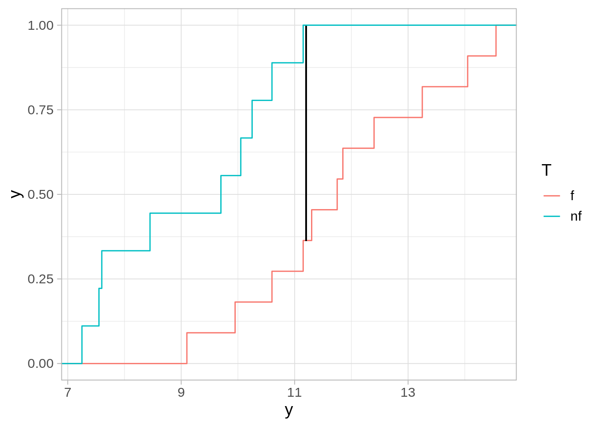
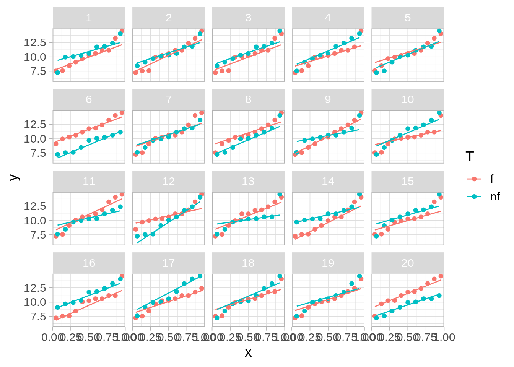

4 Aleatorización en inferencia causal
Empezaremos con ejemplos de inferencia causal y consideramos el ejemplo de (Box et al. (1978)).
Supongamos que un jardinero aficionado tiene un fertilizante, y quiere ver si tiene un efecto agregarlo a sus plantas. Nuestro jardinero solamente tiene una línea donde caben 20 plantas.
Cuando las plantas crezcan, observaremos variabilidad, independientemente de si se usa fertilizante o no. Esta variabilidad proviene de muchos factores ambientales, variaciones en las condiciones del suelo, insectos, etc. Interpretar los resultados correctamente implica necesariamente cuantificar esa variabilidad.
El jardinero escogió algunos lugares dónde poner el fertilizante y dónde no. El resultado que obtuvo es:
Código
res_obs <- tibble(planta = 1:20,
T = c("nf", "nf", "f", "f", "nf", "f", "f", "f", "nf", "nf", "f", "nf", "f", "f", "nf", "f", "f", "nf", "f", "nf"),
y = c(16.9, 19.4, 20.6, 23.7, 22.3, 26.5, 18.2, 19.9, 14.5, 15.1, 29.1, 15.2, 23.5, 24.8, 20.5, 21.2, 22.3, 20.1, 28.1, 21.2) / 2) |>
mutate(y_f = ifelse(T == "nf", y, NA),
y_nf = ifelse(T == "f", y, NA))
res_obs |> select(planta, T, y)# A tibble: 20 × 3
planta T y
<int> <chr> <dbl>
1 1 nf 8.45
2 2 nf 9.7
3 3 f 10.3
4 4 f 11.8
5 5 nf 11.2
6 6 f 13.2
7 7 f 9.1
8 8 f 9.95
9 9 nf 7.25
10 10 nf 7.55
11 11 f 14.6
12 12 nf 7.6
13 13 f 11.8
14 14 f 12.4
15 15 nf 10.2
16 16 f 10.6
17 17 f 11.2
18 18 nf 10.0
19 19 f 14.0
20 20 nf 10.6 Para decidir qué tan bueno es el nuevo fertilizante, el jardinero decide usar la siguiente estadística \(D\) (Kolmogorov-Smirnov):
- Calculamos la fda empírica para los datos con fertilizante y los que no tienen fertilizante
- Calculamos la diferencia máxima entre estas dos curvas.
Un valor de \(D\) grande sugiere que el fertilizante tiene algún efecto. En nuestro experimento, obtuvimos:
Código
ggplot(res_obs, aes(y, colour = T)) +
stat_ecdf() +
geom_segment(x = 11.2, xend = 11.2, y = 0.362, yend = 0.636+0.362, colour = "black")
La diferencia más grande en estas curvas es:
Código
ks_est_2 <- function(datos, grupo){
sep_tbl <- group_split(datos, {{ grupo }})
invisible(ks.test(sep_tbl[[1]]$y, sep_tbl[[2]]$y))$statistic
}
resumen <- res_obs |>
summarise(D = ks_est_2(res_obs, T))
resumen# A tibble: 1 × 1
D
<dbl>
1 0.596Parece ser que las plantas con fertilizante tuvieron mejores resultados (la distribución de las fertilizadas está recorrida hacia la derecha). El problema aquí es que las plantas tienen variabilidad, y la diferencia que observamos, que no es muy grande, podría deberse a esa variabilidad, y no tener qué ver con el fertilizante.
¿Cómo juzgamos si este resultado puede atribuirse a variabilidad en el crecimiento de cada planta?
Reescribimos nuestros datos como:
Código
res_obs# A tibble: 20 × 5
planta T y y_f y_nf
<int> <chr> <dbl> <dbl> <dbl>
1 1 nf 8.45 8.45 NA
2 2 nf 9.7 9.7 NA
3 3 f 10.3 NA 10.3
4 4 f 11.8 NA 11.8
5 5 nf 11.2 11.2 NA
6 6 f 13.2 NA 13.2
7 7 f 9.1 NA 9.1
8 8 f 9.95 NA 9.95
9 9 nf 7.25 7.25 NA
10 10 nf 7.55 7.55 NA
11 11 f 14.6 NA 14.6
12 12 nf 7.6 7.6 NA
13 13 f 11.8 NA 11.8
14 14 f 12.4 NA 12.4
15 15 nf 10.2 10.2 NA
16 16 f 10.6 NA 10.6
17 17 f 11.2 NA 11.2
18 18 nf 10.0 10.0 NA
19 19 f 14.0 NA 14.0
20 20 nf 10.6 10.6 NA Nótese que escribimos en cada caso el dato observado y el no observado.
Ahora supongamos que el tratamiento no tiene ningún efecto sobre el crecimiento de las plantas. Bajo esta hipótesis, podemos rellenar los valores no observados: en cada caso, el dato faltante lo conocemos, y es igual al valor observado para cada planta.
Código
bajo_nula <- res_obs |>
mutate(y_f = y, y_nf = y)
bajo_nula# A tibble: 20 × 5
planta T y y_f y_nf
<int> <chr> <dbl> <dbl> <dbl>
1 1 nf 8.45 8.45 8.45
2 2 nf 9.7 9.7 9.7
3 3 f 10.3 10.3 10.3
4 4 f 11.8 11.8 11.8
5 5 nf 11.2 11.2 11.2
6 6 f 13.2 13.2 13.2
7 7 f 9.1 9.1 9.1
8 8 f 9.95 9.95 9.95
9 9 nf 7.25 7.25 7.25
10 10 nf 7.55 7.55 7.55
11 11 f 14.6 14.6 14.6
12 12 nf 7.6 7.6 7.6
13 13 f 11.8 11.8 11.8
14 14 f 12.4 12.4 12.4
15 15 nf 10.2 10.2 10.2
16 16 f 10.6 10.6 10.6
17 17 f 11.2 11.2 11.2
18 18 nf 10.0 10.0 10.0
19 19 f 14.0 14.0 14.0
20 20 nf 10.6 10.6 10.6 Bajo esta hipótesis, podemos calcular qué pasaría si hubiéramos escogido distintas plantas para el tratamiento de fertilizante.
Simplemente consideramos todas las permutaciones de la columna \(T\), y vemos el valor que tiene nuestra estadística \(D\) en cada caso. La distribución resultante es construida bajo la hipótesis de que el fertilizante no tiene efecto, y muestra la variabilidad de nuestra estadística bajo esta hipótesis.
Usualmente, en lugar de calcular todas las permutaciones, simulamos un número grande de ellas (de mil a 10 mil, por ejemplo). Abajo mostramos dos ejemplos:
Código
permutar_est <- function(datos_tbl){
datos_perm_tbl <- datos_tbl |>
mutate(T = sample(T, size = length(T))) |>
mutate(y_obs = ifelse(T == "f", y_f, y_nf))
datos_perm_tbl |>
summarise(D = ks_est_2(datos_perm_tbl, T))
}
permutar_est_datos <- function(datos_tbl){
datos_perm_tbl <- datos_tbl |>
mutate(T = sample(T, size = length(T))) |>
mutate(y_obs = ifelse(T == "f", y_f, y_nf))
datos_perm_tbl
}
set.seed(112)
permutar_est(bajo_nula)# A tibble: 1 × 1
D
<dbl>
1 0.323Código
permutar_est(bajo_nula)# A tibble: 1 × 1
D
<dbl>
1 0.364Código
perms_dist <- map_df(1:1000, function(i){
permutar_est(bajo_nula) |>
mutate(rep = i)
})Código
ggplot(perms_dist, aes(sample = D)) +
geom_qq(distribution = qunif) +
geom_hline(yintercept = resumen$D, colour = "red") +
xlab("f") + ylab("valor de D") +
labs(subtitle = "Distribución nula de referencia") +
annotate("text", x = 0.1 , y = 0.7, label = "Valor observado", colour = "red")Y aquí vemos todos los posibles resultados bajo distintas asignaciones del fertilizante, bajo la hipótesis del que el fertilizante no tiene ningún efecto. Adicionalmente, marcamos el valor que observamos en el experimento.
Como vemos, el resultado que obtuvimos está en el lado alto de la destribución. Parece ser que el fertilizante tiene algún efecto.
Sin embargo, hay un hueco en nuestro argumento. Por ejemplo,
- ¿Qué pasaría si el jardinero decidió poner el fertilizante en plantas más grandes o que se veían más fuertes para “aprovechar mejor el fertilizante”?
- ¿Qué pasaría si el jardinero decidió poner el fertilizante a las plantas que reciben menos horas de sol para “ayudarles”?
Si esto es cierto, entonces nuestro argumento no es válido. Quizá la diferencia es grande porque el fertilizante se aplicó a plantas con más potencial desde un principio.
Una solución simple es la siguiente:
- Supongamos que le recomendamos al jardinero al principio escoger al azar una asignación del tratamiento.
- En ese caso, la probabilidad de haber observado este resultado (o uno más grande) bajo la hipótesis de que el fertilizante no tiene efecto es
Código
2 * mean(perms_dist$D >= resumen$D)[1] 0.052Llamamos a este valor-p de la prueba, y cuanto más chico es, mayor evidencia tenemos contra la hipótesis nula.
Este valor es bajo, y da evidencia de que el fertilizante ayuda a las plantas. Hay una probabilidad baja de que por azar el jardinero haya escogido una asignación que produce una diferencia tan grande si el fertilizante no ayuda.
Este argumento no funciona si el jardinero intentó “optimizar” la aplicación del fertilizante. En ese caso, quizá activamente buscó una configuración que favorece al fertilizante.
Esta prueba es exacta, en el sentido de que el valor-p que calculamos refleja correctamente la probabilidad de obtener un resultado tan grande o mayor del que observamos si la hipótesis nula es cierta.
4.1 Pruebas de hipótesis visuales
Otra idea es hacer una prueba visual. Primero graficamos varias replicaciones de datos nulos, es decir, datos en donde hemos permutado al azar la columna de tratamiento. Entrenamos nuestra percepción a variaciones consistentes con la hipótesis nula:
Código
library(nullabor)
set.seed(83814)
# comenzamos con rorsach, viendo datos nulos
reps_rorschach <- rorschach(method = null_permute("T"), n = 20, res_obs) |>
as_tibble()
ggplot(reps_rorschach, aes(sample = y, colour = T, group = T)) +
stat_qq(distribution = stats::qunif) +
stat_qq_line(distribution = stats::qunif, fullrange = TRUE) +
facet_wrap(~ .sample) + theme(strip.background =element_rect(fill="gray85"))
Y ahora hacemos nuestra prueba. En la siguiente gráfica 19 cajas tienen datos nulos, y una caja tiene los datos verdaderos.
¿Puedes identificar los datos verdaderos?
Código
reps <- lineup(method = null_permute("T"), n = 20, res_obs) |>
as_tibble()decrypt("4yBx plml jU qZ0jmjZU T3")Código
ggplot(reps, aes(sample = y, colour = T, group = T)) +
stat_qq(distribution = stats::qunif) +
stat_qq_line(distribution = stats::qunif, fullrange = TRUE) +
facet_wrap(~ .sample) + theme(strip.background =element_rect(fill="gray85"))
- Esta prueba es exacta: la probabilidad de identificar los datos correctamente cuando el fertilizante no tiene efecto es menor o igual a 0.05 (valor \(p\)). Esta es la probabilidad de equivocadamente declarar que tenemos evidencia de que la hipótesis nula no se cumple.